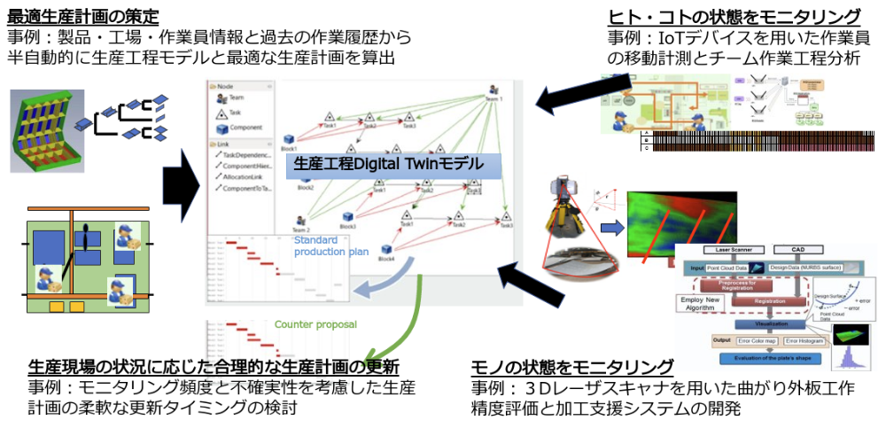
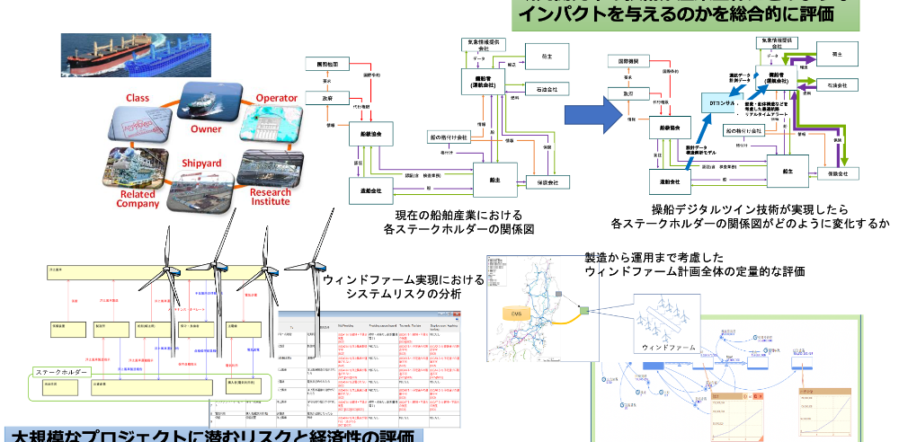

生産工程デジタルツイン管理手法の構築と運用
造船工程などに代表される、人間系による作業の割合が多い工程で、IoT・デジタルツイン・シミュレーション技術を導入することで効率的な工程管理を実現するための研究を実施しています。

現在・過去の研究テーマ
- 2018 - 設計情報と建造実績データを活用したデジタルツイン造船工程シミュレーション手法の構築
- 2018 - 3Dレーザスキャナを用いた曲がり外板工作精度評価と加工支援システムの開発
- 2018 - IoTデバイスを用いた作業員の移動計測とチーム作業工程分析
船舶運航IoTデータの高度利活用
近年のセンシング・IoT技術の発達により、運航中の船舶の様々な状態をモニタリングすることが可能になってきました。そのようなデータをうまく解釈して利用するための研究を実施しています。

現在・過去の研究テーマ
- 2018 - 船舶運航IoTデータを用いた操縦性モデルのパラメータ同定
- 2018 - 船体構造デジタルツインに関する技術開発
- 船体構造デジタルツインプロモーション動画 (日本船舶技術研究協会)

- 2018 - 舶用機器などで発生するデータの標準化・国際規格化
- SSAP(Smart Ship Application Platform)
技術・プロジェクト・社会システムのモデリングと合理的意思決定
近年、製品の構成の多様化・複雑化や、環境影響・サステナビリティなどの新しい指標・考え方の導入により、技術開発や研究プロジェクトを検討するには、単体の技術や自身のプロジェクトだけでなく、それらが関わる複雑な社会システム全体を考慮する必要が出てきました。
本研究室では、船舶海洋に関わる上記のような問題に対して、対象とする技術と社会システムをシステムモデリングによって表現することによって、合理的な意思決定をするための研究を実施しています。
本研究室では、船舶海洋に関わる上記のような問題に対して、対象とする技術と社会システムをシステムモデリングによって表現することによって、合理的な意思決定をするための研究を実施しています。

現在・過去の研究テーマ
- 2018 - デジタルツイン技術が海事産業全体へ与えるインパクトの総合評価
- 2018 - ウィンドファーム実現に向けたプロジェクトのリスクと経済性の評価/設計